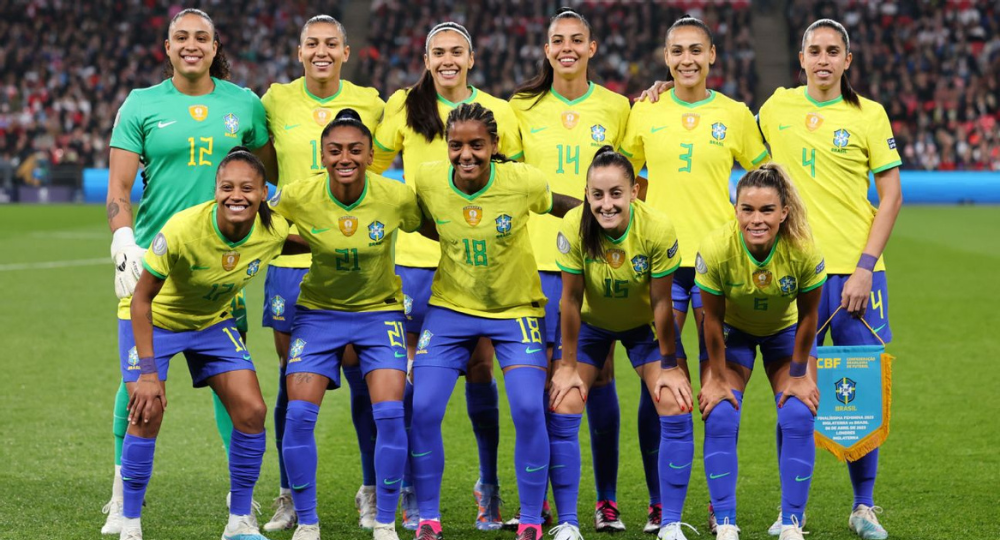
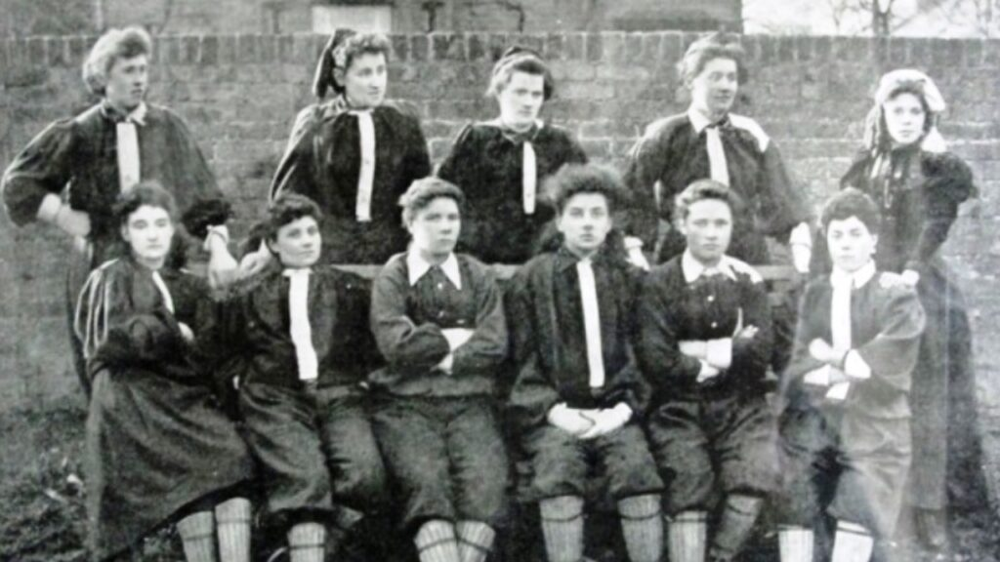

COMO SURGIO O FUTEBOL FEMININO?
O futebol surgiu na metade do século XIX e não demorou muito para se profissionalizar por parte dos homens; enquanto o futebol feminino, começou a ser profissionalizado praticamente 100 anos depois da invenção do esporte.
O futebol feminino teve seu início no final do século XIX no Reino Unido, com a criação do Ladies Football Club, o primeiro time de futebol feminino fundado pela ativista dos direitos das mulheres, Nettie Honeyball. Além disso, há registros de que a primeira partida oficial entre mulheres foi disputada no dia 23 de março de 1885, em Crouch End, na Inglaterra. No Brasil, a prática do futebol feminino só começou a ganhar algum destaque por volta dos anos 1920, mas ainda de forma muito tímida. Inacreditavelmente, em alguns casos, o futebol feminino, naquela época, era tratado mais como uma atração de circo do que como um esporte sério. Fatos como esses e outros no decorrer de toda a história, nos mostra que as mulheres sempre enfrentaram muitos desafios para praticar o futebol, apesar de até mesmo proibições tiveram que enfrentar.
proibicao e desafios
futebol feminino no brasil
Futebol feminino no Brasil Segundo o livro "Futebol, Carnaval e Capoeira - Entre as gingas do corpo brasileiro", de Heloísa Bruhns, enquanto os homens da elite brasileira começaram a praticá-lo no final do século XIX no Rio de Janeiro e em São Paulo, o grupo feminino que aderiu à prática do futebol era pertencente às classes menos favorecidas. Por conta disso, as mulheres que jogavam futebol eram consideradas "grosseiras, sem classe e malcheirosas". Às mulheres daelite cabia o papel de torcedoras. "As partidas de futebol masculinas eram um evento da alta sociedade e as mulheres se arrumavam para ir assistir aos jogos", afirma o livro. Os primeiros registros de partidas mistas no país, com homens e mulheres juntos, datam de 1908 e 1909. Em 1913, houve um evento beneficente, que foi considerado por muitos anos como a primeira partida de futebol feminino no Brasil. Anos depois, porém, foi descoberto que, na verdade, o time “feminino” era formado por jogadores do Sport Club Americano, campeão paulista daquele ano, vestidos de mulher, misturados a “senhoritas da sociedade”.Desta forma, considera-se que a primeira partida de futebol feminino no Brasil ocorreu em 1921, entre senhoritas dos bairros Tremembé e Cantareira, na zona norte de São Paulo, conforme noticiado pelo jornal A Gazeta. Em 1941, aconteceu o primeiro jogo masculino apitado por uma mulher, num amistoso entre o Serrano de Petrópolis contra o América do Rio. Na ocasião, o árbitro passou mal e uma atleta da partida preliminar ao amistoso assumiu o apito. Em 14 de Abril de 1941, durante a presidência de Getúlio Vargas, foi-se criado o Decreto-Lei 3199, proibindo a “prática de esportes incompatíveis com a natureza feminina”, entre eles o futebol. Este decreto-lei só seria revogado em 1979. O Araguari Atlético Clube é considerado o primeiro clube do Brasil a formar um time feminino, que em meados de 1958, selecionou 22 meninas para um jogo benificiente em dezembro deste mesmo ano. O sucesso desta partida foi tão grande, que a revista "O Cruzeiro" fez matéria de capa sobre o acontecimento, pois até então, partidas femininas só ocorriam em circos ou em quadras de futsal. Com esta divulgação, houve, nos meses seguintes, vários jogos do time feminino do Araguari em cidades de Minas Gerais (Belo Horizonte inclusive) e também em Goiânia e Salvador. Em meados de 1959 a equipe feminina do Araguari foi desfeita, por pressão dos religiosos de Minas Gerais. Em 1967, Asaléa de Campos Micheli, mais conhecida por Léa Campos, foi a primeira mulher a terminar um curso de arbitragem. O Decreto-Lei 3199 proibia as mulheres apenas de jogarem, mas não faziam menção sobre arbitragem. Essa brecha foi o que garantiu a Léa o direito de participar do curso de árbitros em Minas Gerais, feito no Departamento de Futebol Amador da Federação Estadual. Em entrevista ao programa Esporte Espetacular, da Rede Globo, em 2007, ela informou que não pode participar sequer da formatura do curso, por represálias machistas. A primeira Seleção Brasileira de Futebol Feminino foi convocada pela CBF em 1988, para disputar, e vencer, o “Women’s Cup of Spain”.